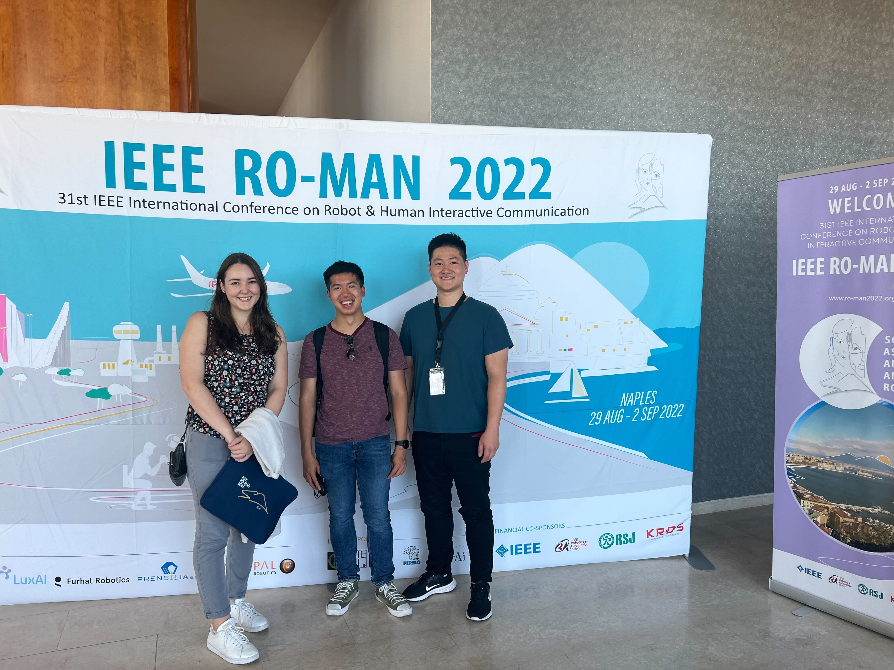

2023
University of Chicago Prof. Sarah Sebo presents robot-human interaction research
Imagine a world where humans empathize with robots. Well, according to recent research at the University of Chicago, they already do. About 40 students gathered in classroom B211 in the Technological Institute Friday afternoon to hear about University of Chicago computer science Prof. Sarah Sebo’s research as director of the Human-Robot Interaction Lab. Sebo presented
Jan 04
Lab Meetings for Winter 2023
HRI lab meetings will be held during the 2023 Winter quarter on Wednesdays from 3:00pm - 4:00pm in JCL 346 starting Wednesday, Jan 11. If you’re a current UChicago student and interested in learning more about our research and/or how to get involved with our research, please feel free to join our weekly lab meetings. Feel free to email sarahsebo@uchicago.edu if you have any questions.
2022
Sep 28
Lab Meetings for Fall 2022
HRI lab meetings will be held during the 2022 Fall quarter on Wednesdays from 12:30pm - 1:30pm in JCL 354 starting Wednesday, September 28. If you’re a current UChicago student and interested in learning more about our research and/or how to get involved with our research, please feel free to join our weekly lab meetings. Feel free to email sarahsebo@uchicago.edu if you have any questions.
Sep 27
Welcoming New PhD Students
This fall, we are welcoming two new PhD students to the lab: Lauren Wright and Tewodros Ayalew. Welcome Lauren and Tewodros!
Aug 30
RO-MAN 2022 Paper Presentations
Our group is presenting 3 papers at the IEEE International Conference on Robot & Human Interactive Communication (RO-MAN 2022):
- Physical Touch from a Robot Caregiver: Examining Factors that Shape Patient Experience by Alex Mazursky, Madeleine DeVoe, and Sarah Sebo
- Benefits of an Interactive Robot Character in Immersive Puzzle Games by Ting-Han Lin*, Spencer Ng*, and Sarah Sebo (*equal contribution)
- Parental Responses to Aggressive Child Behavior towards Robots, Smart Speakers, and Tablets by Keziah Naggita, Elsa Athiley, Beza Desta, and Sarah Sebo
Aug 29
HRI Lab at 2022 RO-MAN
Lauren, Spencer, and Timmy are attending RO-MAN in Naples, Italy this week to present their work!
May 30
RO-MAN 2022 Paper Acceptances
Our group had 3 papers accepted to the IEEE International Conference on Robot & Human Interactive Communication (RO-MAN 2022):
- Physical Touch from a Robot Caregiver: Examining Factors that Shape Patient Experience by Alex Mazursky, Madeleine DeVoe, and Sarah Sebo
- Benefits of an Interactive Robot Character in Immersive Puzzle Games by Ting-Han Lin*, Spencer Ng*, and Sarah Sebo (*equal contribution)
- Parental Responses to Aggressive Child Behavior towards Robots, Smart Speakers, and Tablets by Keziah Naggita, Elsa Athiley, Beza Desta, and Sarah Sebo
Apr 9
HRI Lab Demos at Chicago's Museum of Science and Industry's Robot Block Party
Our lab demoed our some current research projects at Chicago's Museum of Science and Industry for their Robot Block Party event. It was incredibly fun to share our work and robots with so many interested children, adults, and robo-enthusiasts!


Apr 4
Lab Meetings for Spring 2022
HRI lab meetings will be held during the 2022 Spring quarter on Mondays from 3:00pm - 4:00pm CST in JCL 354 starting Monday, April 4. If you’re a current UChicago student and interested in learning more about our research and/or how to get involved with our research, please feel free to join our weekly lab meetings. Feel free to email sarahsebo@uchicago.edu if you have any questions.
Mar 15
HRI Lab at Chicago's Green River
Some of the HRI Lab members visited Chicago's Green River while in downtown Chicago. The city dyes the Chicago river green each year for St. Patrick's day.

Mar 4
Robot Demos for CS PhD Visit Day
We had our first in-person lab demo session for the admitted CS PhD students visit day!

Jan
Sarah on Parental Leave
Sarah delivered her baby in December of 2021 and is on parental leave during the Winter quarter of 2022.
2021
Nov 1
Brainstorming at our HRI Lab Meeting
We brainstormed activities that might increase an interpersonal bond between a human and a robot during our weekly lab meeting.

Oct 4
Lab Meetings for Fall 2021
HRI lab meetings will be held during the 2021 Fall quarter on Mondays from 4:00pm - 5:00pm CST in JCL 354 starting Monday, October 4. If you’re a current UChicago student and interested in learning more about our research and/or how to get involved with our research, please feel free to join our weekly lab meetings. Feel free to email sarahsebo@uchicago.edu if you have any questions.
Sept 27
Topics in Human-Robot Interaction Class
For UChicago students interested in learning more about human-robot interaction research, in the fall quarter of 2021 PI Sarah Sebo is teaching CMSC 33281 Topics in Human-Robot Interaction. This course gives students a broad overview of current cutting-edge research in HRI and also provides students with the opportunity of conducting their very own HRI research project.
Aug 20
HRI Lab - Summer Research Team
This summer, 4 undergraduate UChiacgo students conducted summer internships in the HRI lab working on a variety of interesting projects - we had a great time!

Mar 29
Introduction to Robotics Class (Spring 2021)
For UChicago students interested in learning more about robotics, in the spring quarter of 2021 PI Sarah Sebo is teaching CMSC 20600 Introduction to Robotics . This course is a hands-on and project based course designed to give students familiarity programming physical robots and real-world environments. Check out the course website for more details.
Jan 21
HRI Lab First Meeting
We, the HRI lab at UChicago, had our first lab meeting! Lab meetings will occur every week from 3:00pm - 4:00pm on Thursdays. If you’re a current UChicago student and interested in learning more about our research and/or how to get involved with our research, please feel free to join our weekly lab meetings (email sarahsebo@uchicago.edu for the Zoom link).
Jan 11
Introduction to Robotics Class (Winter 2021)
For UChicago students interested in learning more about robotics, in the winter quarter of 2021 PI Sarah Sebo is teaching CMSC 20600 Introduction to Robotics . This course is a hands-on and project based course designed to give students familiarity programming physical robots and real-world environments. Check out the course website for more details.
2020
Dec 22
Published Research
PI Sarah Sebo’s work The Influence of Robot Verbal Support on Human Team Members: Encouraging Outgroup Contributions and Suppressing Ingroup Supportive Behavior has been published in Frontiers in Psychology: Performance Science in their special issue Teamwork in Human-Machine Teaming.
Oct 21
Presentation of Work
PI Sarah Sebo presented her work Robots in Groups and Teams: A Literature Review at the virtual CSCW 2020 conference.